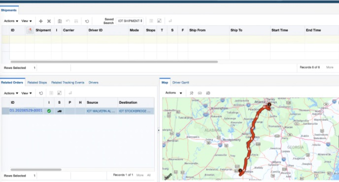

Organizations best suited for IoT are those that would benefit from using sensor devices in their business processes.
Manufacturers can gain a competitive advantage by using production-line monitoring to enable proactive maintenance on equipment when sensors detect an impending failure. Sensors can actually measure when production output is compromised. With the help of sensor alerts, manufacturers can quickly check equipment for accuracy or remove it from production until it is repaired. This allows companies to reduce operating costs, get better uptime, and improve asset performance management.
The automotive industry stands to realize significant advantages from the use of IoT applications. In addition to the benefits of applying IoT to production lines, sensors can detect impending equipment failure in vehicles already on the road and can alert the driver with details and recommendations. Thanks to aggregated information gathered by IoT-based applications, automotive manufacturers and suppliers can learn more about how to keep cars running and car owners informed.
Transportation and logistical systems benefit from a variety of IoT applications. Fleets of cars, trucks, ships, and trains that carry inventory can be rerouted based on weather conditions, vehicle availability, or driver availability, thanks to IoT sensor data. The inventory itself could also be equipped with sensors for track-and-trace and temperature-control monitoring. The food and beverage, flower, and pharmaceutical industries often carry temperature-sensitive inventory that would benefit greatly from IoT monitoring applications that send alerts when temperatures rise or fall to a level that threatens the product.
IoT applications allow retail companies to manage inventory, improve customer experience, optimize supply chain, and reduce operational costs. For example, smart shelves fitted with weight sensors can collect RFID-based information and send the data to the IoT platform to automatically monitor inventory and trigger alerts if items are running low. Beacons can push targeted offers and promotions to customers to provide an engaging experience.
The benefits of IoT in the public sector and other service-related environments are similarly wide-ranging. For example, government-owned utilities can use IoT-based applications to notify their users of mass outages and even of smaller interruptions of water, power, or sewer services. IoT applications can collect data concerning the scope of an outage and deploy resources to help utilities recover from outages with greater speed.
IoT asset monitoring provides multiple benefits to the healthcare industry. Doctors, nurses, and orderlies often need to know the exact location of patient-assistance assets such as wheelchairs. When a hospital’s wheelchairs are equipped with IoT sensors, they can be tracked from the IoT asset-monitoring application so that anyone looking for one can quickly find the nearest available wheelchair. Many hospital assets can be tracked this way to ensure proper usage as well as financial accounting for the physical assets in each department.
In addition to tracking physical assets, IoT can be used to improve worker safety. Employees in hazardous environments such as mines, oil and gas fields, and chemical and power plants, for example, need to know about the occurrence of a hazardous event that might affect them. When they are connected to IoT sensor–based applications, they can be notified of accidents or rescued from them as swiftly as possible. IoT applications are also used for wearables that can monitor human health and environmental conditions. Not only do these types of applications help people better understand their own health, they also permit physicians
